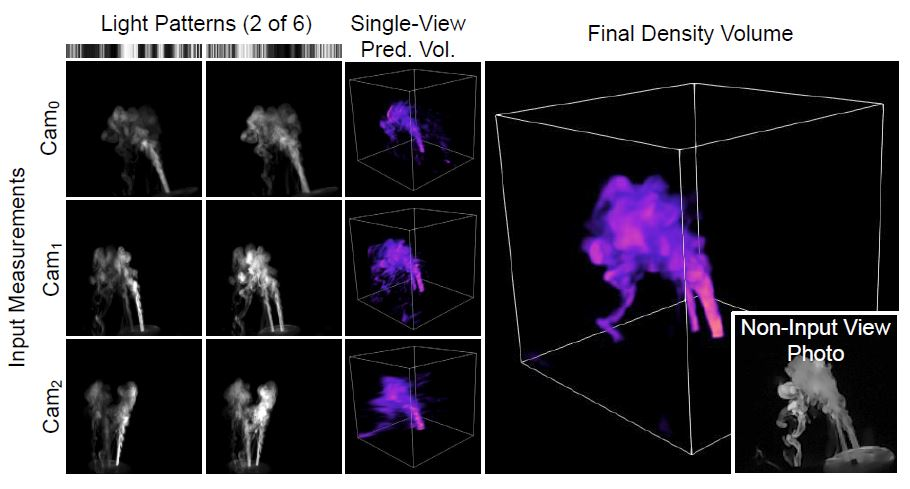
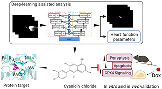
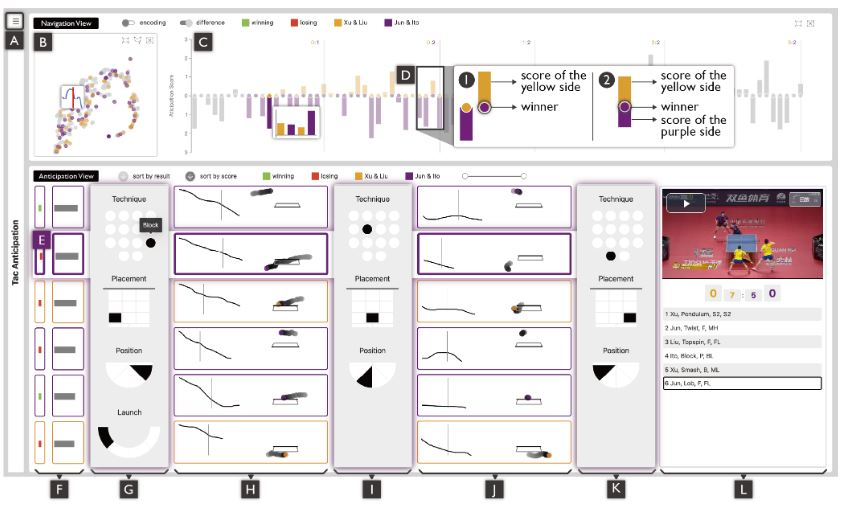

Research
I'm currently interested in computer graphics and computational imaging. Representative paper is highlighted.
|
|

|
Real-time Acquisition and Reconstruction of Dynamic Volumes with Neural Structured Illumination
Yixin Zeng*, Zoubin Bi*(*contribute equally), Mingrui Yin, Xiang Feng, Kun Zhou,
Hongzhi Wu
CVPR, 2024
[Project Page]
We propose a novel framework for real-time acquisition and reconstruction of temporally-varying 3D phenomena with high quality.
|
|

|
Use of Deep-Learning Assisted Assessment of Cardiac Parameters in Zebrafish to Discover Cyanidin Chloride as a Novel Keap1 Inhibitor Against Doxorubicin-Induced Cardiotoxicity
Changtong Liu, Yingchao Wang, Yixin Zeng, Zirong Kang, Hong Zhao, Kun Qi, Hongzhi Wu, Lu Zhao and Yi Wang
Advanced Science, 2023, 2301136.
[Publisher Site (Open Access)]
We establish a zebrafish phenotypic screening method with deep-learning assisted multiplex cardiac functional analysis using motion videos of larval hearts.
|
|

|
Tac-Anticipator: Visual Analytics of Anticipation Behaviors in Table Tennis Matches
Jiachen Wang, Yihong Wu, Xiaolong Zhang, Yixin Zeng, Zheng Zhou, Hui Zhang, Xiao Xie, and Yingcai Wu
Computer Graphics Forum, 2023.
[Publisher Site (Open Access)]
We develop a complete solution that includes data collection, the development of a model to evaluate anticipation behaviors, and the design of a visual analytics system.
|
|
{kind=link}